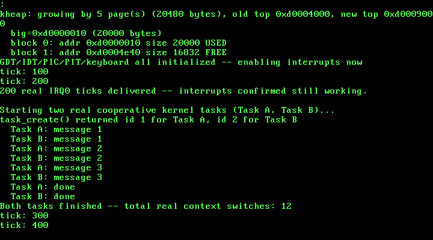

11. Kernel-Level Multitasking: Cooperative Task Switching¶
What you will understand: what a real context switch actually has to save and restore on i686 -- and, just as important, what cdecl already lets it skip -- how a brand-new task's stack has to be pre-built by hand so the very first switch into it works with no special-case code, the real difference between a cooperative scheduler (this chapter) and a preemptive one (not yet -- no timer drives this), and how to count real context switches independently and match the kernel's own number exactly.
What you need to know first: Chapter 9's kmalloc/kfree (this chapter's only source of memory for a new task's stack), and the plain cdecl calling convention this book's C code has used since Chapter 3 (this chapter leans on it directly, not just as background). This chapter opens Part 6 -- everything through Chapter 10 was one single flow of control; this is the first chapter where more than one genuinely exists at once.
One flow of control, always -- until now¶
Every chapter before this one has had exactly one real thread of execution. Interrupt handlers dip in and back out (Chapters 4-6, 10), but kmain() itself never actually shares the CPU with anything else that has its own independent stack and its own independent idea of "where I currently am in my own code." This chapter changes that for real: two new kernel tasks, each with a stack Chapter 9's kmalloc() hands out, each resuming exactly where it left off every time it gets the CPU back -- not because an interrupt forces the handoff, but because each task calls task_yield() on its own. That voluntary handoff is what "cooperative" means, and it is also what makes every switch in this chapter's real run countable by hand.
What a context switch has to save, cited from source¶
The OSDev Wiki's own cooperative-multitasking tutorial saves everything -- every general-purpose register, EIP, EFLAGS, even CR3:
"uint32_t eax, ebx, ecx, edx, esi, edi, esp, ebp, eip, eflags, cr3"
(OSDev Wiki, "X86 Cooperative Multitasking Tutorial": https://wiki.osdev.org/X86_Cooperative_Multitasking_Tutorial)
That is a genuinely correct, genuinely citable design -- and this chapter deliberately does not use it. This book's C code has used the plain cdecl calling convention since Chapter 3, and cdecl already answers most of this question on its own:
"For cdecl; EAX, ECX, and EDX are already saved by the caller and don't need to be saved again"
(OSDev Wiki, "Kernel Multitasking": https://wiki.osdev.org/Kernel_Multitasking)
task_yield() is an ordinary cdecl C function. Whatever called it already assumed EAX, ECX, and EDX could be clobbered by any ordinary function call -- task_yield() is no different from kprintf() in that respect. That leaves exactly four general-purpose registers a real switch has to preserve by hand: EBX, ESI, EDI, EBP. EIP does not need to be saved as data at all -- call switch_task already pushed the caller's own return address onto the stack being saved, and the matching ret at the very end of switch_task is what resumes the other task, by popping whatever return address sits on top of its stack. This kernel also has no ring 3 code and no per-task address space yet -- every task shares the one page directory Chapter 8 built -- so there is no CR3 to reload and no TSS.ESP0 field to update, both real things a fuller kernel's switch routine has to do that this one's genuinely does not need to.
011_switch.asm: four registers, one stack-pointer swap, one ret¶
; Chapter 11: the one real context switch this whole book comes down
; to. Every C function on this book's freestanding i686 target already
; uses cdecl, and cdecl's own convention is what makes this routine as
; small as it is: "EAX, ECX, and EDX are already saved by the caller
; and don't need to be saved again" (OSDev Wiki, "Kernel Multitasking":
; https://wiki.osdev.org/Kernel_Multitasking) -- whichever C code
; called switch_task() already assumed those three could be clobbered
; by any ordinary function call, switch_task() included. That leaves
; exactly four registers this routine has to save by hand: EBX, ESI,
; EDI, EBP. EIP does not need to be saved explicitly either -- `call`
; already pushed the caller's own return address, and the matching
; `ret` at the end of this routine is what actually resumes the *new*
; task, by popping whatever return address sits on top of *its* stack.
;
; void switch_task(uint32_t *old_esp_ptr, uint32_t new_esp);
; old_esp_ptr -- where to store this task's own ESP, once every
; register this routine owns has been pushed
; new_esp -- the ESP to switch onto: some other task's own
; previously-saved ESP (task_yield() resuming it), or
; a stack task_create() built by hand (task_switch()
; running it for the very first time)
BITS 32
section .text
global switch_task
switch_task:
push ebp
push ebx
push esi
push edi
; four pushes above (16 bytes) sit on top of the return address
; `call` pushed (4 bytes) and this routine's own two cdecl
; arguments above that -- so old_esp_ptr is 16+4=20 bytes above
; the current ESP, and new_esp is 24 bytes above it.
mov eax, [esp+20] ; eax = old_esp_ptr
mov [eax], esp ; *old_esp_ptr = esp (this task's saved state)
mov eax, [esp+24] ; eax = new_esp
mov esp, eax ; the actual switch: every register below
; this point is read from the NEW task's
; own stack, not the old one's
pop edi
pop esi
pop ebx
pop ebp
ret ; pops whatever return address sits on
; top of the new stack -- either back
; into task_yield() for a task resuming
; where it left off, or straight into
; task_create()'s chosen entry point,
; the first time this task ever runs
The whole routine is really one idea: mov [eax], esp records where this task's stack currently is into its own TCB, and mov esp, eax (from the second argument) is the entire "switch" -- every pop after that line reads from the new task's stack, not the old one's. Nothing about the CPU's instruction pointer needs separate handling, because ret already does exactly the right thing once esp itself points somewhere else.
011_task.h / 011_task.c: the TCB, and a stack built to match¶
The OSDev Wiki describes the Thread Control Block a real kernel scheduler needs in almost exactly these terms:
"The TCB holds task state including the kernel stack pointer (ESP) ..."
(OSDev Wiki, "Kernel Multitasking")
#ifndef UNIX_OS_011_TASK_H
#define UNIX_OS_011_TASK_H
#include <stdint.h>
/* Sets up this kernel's task list with exactly one task -- task 0, the
* kernel's own boot-time execution context (the one kmain() is already
* running on when this is called), still running on the same boot
* stack every chapter since Chapter 1 has used. Must be called before
* any task_create()/task_yield()/task_exit() call. */
void task_init(void);
/* Creates a new cooperative kernel task: allocates it a real stack
* from Chapter 9's kmalloc(), and pre-populates that stack so the
* first time this task is ever switched into, execution begins at
* `entry` (OSDev Wiki, "X86 Cooperative Multitasking Tutorial": "the
* kernel needs to put values on the new task's kernel stack to match
* the values that 'switch_tasks' expects to pop off"). `entry` must
* eventually call task_exit() -- it must never return normally.
* Returns the new task's index (1, 2, ...), or -1 if this kernel's
* fixed task table is already full. */
int task_create(void (*entry)(void));
/* Voluntarily gives up the CPU: saves the calling task's callee-saved
* registers and stack pointer, picks the next RUNNING task in
* round-robin order, and switches to it. Returns normally, right
* where it left off, once this task is switched back in. If no other
* task is currently RUNNING, returns immediately without performing a
* real switch. */
void task_yield(void);
/* Marks the calling task DONE and switches away from it permanently.
* Never returns -- this task's own stack and call frame are simply
* abandoned from this point on. */
void task_exit(void);
/* Non-zero once the task at `index` (as returned by task_create())
* has called task_exit(). */
int task_is_done(int index);
/* Total number of real context switches switch_task() has performed
* since task_init(). Exists purely for this chapter's own real, live
* verification. */
uint32_t task_switch_count(void);
#endif
#include <stdint.h>
#include "011_kheap.h"
#include "011_printf.h"
#include "011_task.h"
/* This chapter's own Thread Control Block, in the same spirit the
* OSDev Wiki describes for kernel-level tasks: "The TCB holds task
* state including the kernel stack pointer (ESP) ... " (OSDev Wiki,
* "Kernel Multitasking": https://wiki.osdev.org/Kernel_Multitasking).
* This kernel has no user/kernel privilege split and no per-task
* address space yet -- every task here runs in ring 0 sharing the one
* page directory Chapter 8 built -- so this TCB carries nothing for
* CR3 or a TSS.ESP0 field the way a fuller kernel's would; `esp` is
* the whole of what switch_task() needs. */
struct task {
uint32_t esp; /* valid only while this task is NOT current */
void *stack_base; /* the kmalloc()'d block backing this task's
* stack -- kept only so a later chapter with
* real task teardown could kfree() it; this
* chapter never frees a task's stack */
int done;
};
#define TASK_MAX_TASKS 3u
#define TASK_STACK_SIZE 4096u
static struct task tasks[TASK_MAX_TASKS];
static int task_count = 0;
static int current_task = 0;
static uint32_t switch_count = 0;
extern void switch_task(uint32_t *old_esp_ptr, uint32_t new_esp);
void task_init(void) {
tasks[0].esp = 0; /* never read while task 0 is current */
tasks[0].stack_base = 0; /* task 0 owns no kmalloc'd stack -- it
* is this kernel's own boot stack,
* already running before task_init()
* is ever called */
tasks[0].done = 0;
task_count = 1;
current_task = 0;
switch_count = 0;
}
int task_create(void (*entry)(void)) {
if (task_count >= (int) TASK_MAX_TASKS) {
kprintf("task_create: task table full (%u tasks) -- refusing\n", TASK_MAX_TASKS);
return -1;
}
struct task *t = &tasks[task_count];
void *stack = kmalloc(TASK_STACK_SIZE);
uint32_t top = (uint32_t) (uintptr_t) stack + TASK_STACK_SIZE;
uint32_t *sp = (uint32_t *) top;
/* Build the exact stack frame switch_task()'s own epilogue expects
* to pop the first time this task is switched into: EDI, ESI, EBX,
* EBP (in that order, since switch_task() pushed EBP first and
* pops in reverse), then a return address on top -- which is what
* makes switch_task()'s final `ret` land directly on `entry`
* (OSDev Wiki, "X86 Cooperative Multitasking Tutorial": a new
* task's registers are initialized with
* "task->regs.esp = (uint32_t) allocPage() + 0x1000" and
* "task->regs.eip = (uint32_t) main"). Zero is a fine placeholder
* for EBP/EBX/ESI/EDI here -- nothing has run inside this task yet
* to give those registers a real saved value. */
*(--sp) = (uint32_t) (uintptr_t) entry; /* return address for `ret` */
*(--sp) = 0; /* ebp */
*(--sp) = 0; /* ebx */
*(--sp) = 0; /* esi */
*(--sp) = 0; /* edi */
t->esp = (uint32_t) (uintptr_t) sp;
t->stack_base = stack;
t->done = 0;
int index = task_count;
task_count++;
return index;
}
void task_yield(void) {
int old = current_task;
int next = old;
for (int i = 1; i <= task_count; i++) {
int candidate = (old + i) % task_count;
if (!tasks[candidate].done) {
next = candidate;
break;
}
}
if (tasks[next].done) {
/* Every task, including this one, has called task_exit() --
* this cooperative scheduler has no idle task to fall back on
* yet, so there is genuinely nothing left to run. */
kprintf("task_yield: no runnable task remains -- halting\n");
__asm__ volatile ("cli");
for (;;) {
__asm__ volatile ("hlt");
}
}
if (next == old) {
return; /* only this task is runnable -- nothing to switch to */
}
current_task = next;
switch_count++;
switch_task(&tasks[old].esp, tasks[next].esp);
}
void task_exit(void) {
tasks[current_task].done = 1;
task_yield();
/* unreachable: task_yield() above either switches this task's own
* stack away permanently (this call frame is simply abandoned,
* never resumed again) or halts the kernel outright if nothing
* else is runnable. */
}
int task_is_done(int index) {
return tasks[index].done;
}
uint32_t task_switch_count(void) {
return switch_count;
}
The one genuinely tricky part of this whole chapter is task_create()'s manual stack layout, and it is tricky for a real reason the OSDev Wiki states plainly:
"when a new task is being created the kernel needs to put values on the new task's kernel stack to match the values that the 'switch_tasks' expects to pop off"
(OSDev Wiki, "Kernel Multitasking")
switch_task()'s epilogue always pops, in order, EDI, ESI, EBX, EBP, then rets into whatever sits above those on the stack. A task that has genuinely run before has that layout because switch_task() itself built it, back when this task last called task_yield(). A task that has never run has no such history -- so task_create() builds the identical layout by hand, four zeroed placeholder registers and entry sitting exactly where a real return address would be. The OSDev cooperative-tutorial's own version of this same idea sets task->regs.esp = (uint32_t) allocPage() + 0x1000 and task->regs.eip = (uint32_t) main directly into a saved-registers struct; this chapter's version reaches the same real result -- the first switch into a brand-new task lands on entry with a clean stack -- by writing that same handful of values onto the stack itself, in the exact order switch_task()'s own pop sequence expects, rather than into named struct fields a fuller (non-cdecl-shortcut) switch routine would read one at a time.
011_kmain.c: two real tasks, interleaved for real¶
Everything through Chapter 10 runs first, unchanged, for the same reason it always has -- if anything below this chapter's own new material broke, that would be the first real evidence. What's new replaces Chapter 10's deliberate page fault (which halts the kernel for good, and so cannot coexist with anything meant to keep running afterward) with two real cooperative tasks:
/* Chapter 11: this kernel runs more than one thing at once for the
* first time. Every chapter before this one has had exactly one real
* flow of control -- kmain() itself, dipping into interrupt handlers
* and back out again, but always resuming exactly where it left off.
* This chapter adds real cooperative kernel-level tasks: independent
* stacks (Chapter 9's kmalloc(), reused for a new purpose), a real
* context switch that saves and restores just enough of the CPU state
* to resume each one correctly, and a round-robin scheduler that
* hands control between them only when a task voluntarily calls
* task_yield(). Nothing preempts a task here -- there is no timer
* interrupt driving this yet, on purpose; that is what "cooperative"
* means, and it is also why every real switch below can be counted
* and traced by hand. */
#include <stdint.h>
#include "011_gdt.h"
#include "011_idt.h"
#include "011_keyboard.h"
#include "011_kheap.h"
#include "011_multiboot.h"
#include "011_paging.h"
#include "011_pic.h"
#include "011_pit.h"
#include "011_pmm.h"
#include "011_printf.h"
#include "011_serial.h"
#include "011_task.h"
#include "011_vga.h"
#define TIMER_FREQUENCY_HZ 100
/* Deliberately far outside the 0-64 MiB identity-mapped range (which
* only ever occupies page-directory entries 0-15): 0xC0000000 >> 22 =
* 768. Mapping here forces paging_map_page() to allocate a genuinely
* new page table rather than reusing one paging_init() already built. */
#define TEST_VIRT_ADDR 0xC0000000u
/* Defined by 011_linker.ld, not by this file -- the linker is the one
* part of this toolchain that genuinely knows where the kernel image's
* last real section ends in physical memory. */
extern char kernel_end[];
/* This chapter's two demo tasks. Each one prints three messages,
* voluntarily calling task_yield() after every one, then calls
* task_exit() -- the contract task_create() documents every entry
* function must honor. Neither function ever returns normally. */
static void task_a_entry(void) {
for (int i = 1; i <= 3; i++) {
kprintf(" Task A: message %d\n", i);
task_yield();
}
kprintf(" Task A: done\n");
task_exit();
}
static void task_b_entry(void) {
for (int i = 1; i <= 3; i++) {
kprintf(" Task B: message %d\n", i);
task_yield();
}
kprintf(" Task B: done\n");
task_exit();
}
void kmain(uint32_t magic, uint32_t mboot_info_addr) {
serial_init();
vga_init();
vga_set_color(VGA_COLOR_LIGHT_GREEN, VGA_COLOR_BLACK);
kprintf("Unix OS from Scratch -- Chapter 11: kernel entry reached\n");
if (magic != MULTIBOOT2_BOOTLOADER_MAGIC) {
kprintf("FATAL: EAX held 0x%x at entry, not the real Multiboot2 magic 0x%x -- halting\n",
magic, MULTIBOOT2_BOOTLOADER_MAGIC);
__asm__ volatile ("cli");
for (;;) { __asm__ volatile ("hlt"); }
}
kprintf("Multiboot2 magic confirmed in EAX: 0x%x\n", magic);
const struct multiboot_tag_mmap *mmap = multiboot_find_mmap(mboot_info_addr);
if (mmap == 0) {
kprintf("FATAL: no memory map tag in this boot information structure -- halting\n");
__asm__ volatile ("cli");
for (;;) { __asm__ volatile ("hlt"); }
}
multiboot_print_mmap(mmap);
uint32_t kernel_end_addr = (uint32_t) (uintptr_t) kernel_end;
kprintf("Kernel image occupies physical 0x100000 - 0x%x\n", kernel_end_addr);
pmm_init(mmap, 0x100000, kernel_end_addr);
uint32_t free_frames = pmm_count_free_frames();
kprintf("Physical memory manager ready: %u free frames (%u KiB usable)\n",
free_frames, free_frames * 4);
uint32_t f1 = pmm_alloc_frame();
uint32_t f2 = pmm_alloc_frame();
uint32_t f3 = pmm_alloc_frame();
kprintf("Allocated three real frames: 0x%x, 0x%x, 0x%x\n", f1, f2, f3);
pmm_free_frame(f2);
kprintf("Freed the middle frame 0x%x -- %u free frames now\n", f2, pmm_count_free_frames());
uint32_t f4 = pmm_alloc_frame();
kprintf("Allocated again: got 0x%x (matches the freed frame? %s)\n",
f4, (f4 == f2) ? "yes" : "no");
paging_init();
uint32_t test_frame = pmm_alloc_frame();
paging_map_page(TEST_VIRT_ADDR, test_frame, PAGE_PRESENT | PAGE_RW);
volatile uint32_t *via_virtual = (volatile uint32_t *) TEST_VIRT_ADDR;
volatile uint32_t *via_identity = (volatile uint32_t *) test_frame;
*via_virtual = 0xCAFEF00Du;
kprintf("Wrote 0x%x through virtual address 0x%x\n", *via_virtual, TEST_VIRT_ADDR);
kprintf("Reading the SAME physical frame (0x%x) through its identity-mapped address: 0x%x\n",
test_frame, *via_identity);
kheap_init();
kprintf("kmalloc: three real allocations --\n");
void *a = kmalloc(64);
void *b = kmalloc(128);
void *c = kmalloc(32);
kprintf(" a=0x%x (64 bytes), b=0x%x (128 bytes), c=0x%x (32 bytes)\n",
(uint32_t) (uintptr_t) a, (uint32_t) (uintptr_t) b, (uint32_t) (uintptr_t) c);
kheap_dump();
kfree(b);
kprintf("kfree(b) -- middle block freed:\n");
kheap_dump();
void *d = kmalloc(128);
kprintf("kmalloc(128) again: got 0x%x (matches freed b? %s)\n",
(uint32_t) (uintptr_t) d, (d == b) ? "yes" : "no");
kheap_dump();
kfree(a);
kfree(c);
kfree(d);
kprintf("Freed a, c, d -- coalesced back to one free block?\n");
kheap_dump();
kprintf("kmalloc(20000) -- larger than the whole initial 16 KiB heap, forcing real growth:\n");
void *big = kmalloc(20000);
kprintf(" big=0x%x (20000 bytes)\n", (uint32_t) (uintptr_t) big);
kheap_dump();
kfree(big);
gdt_init();
idt_init();
pic_remap(0x20, 0x28);
pic_disable_all();
keyboard_init();
pit_init(TIMER_FREQUENCY_HZ);
kprintf("GDT/IDT/PIC/PIT/keyboard all initialized -- enabling interrupts now\n");
__asm__ volatile ("sti");
while (pit_get_ticks() < 200) {
__asm__ volatile ("hlt");
}
kprintf("%u real IRQ0 ticks delivered -- interrupts confirmed still working.\n", pit_get_ticks());
kprintf("\nStarting two real cooperative kernel tasks (Task A, Task B)...\n");
task_init();
int task_a_id = task_create(task_a_entry);
int task_b_id = task_create(task_b_entry);
kprintf("task_create() returned id %d for Task A, id %d for Task B\n", task_a_id, task_b_id);
while (!task_is_done(task_a_id) || !task_is_done(task_b_id)) {
task_yield();
}
kprintf("Both tasks finished -- total real context switches: %u\n", task_switch_count());
for (;;) {
__asm__ volatile ("hlt");
}
}
Note what 011_idt.c and 011_isr_handlers.c still carry forward completely unchanged from Chapter 10: vector 14's real #PF gate is still installed, still fully capable of firing. This chapter simply never triggers it on purpose the way Chapter 10 did -- there would be no task-switching demonstration left to show afterward if it did.
Building it, for real¶
nasm -f elf32 011_boot.asm -o boot.o
nasm -f elf32 011_gdt_flush.asm -o gdt_flush.o
nasm -f elf32 011_idt_flush.asm -o idt_flush.o
nasm -f elf32 011_isr0.asm -o isr0.o
nasm -f elf32 011_isr14.asm -o isr14.o
nasm -f elf32 011_irq0.asm -o irq0.o
nasm -f elf32 011_irq1.asm -o irq1.o
nasm -f elf32 011_switch.asm -o switch.o
gcc -m32 -ffreestanding -fno-stack-protector -fno-pic -Wall -Wextra -c 011_vga.c -o vga.o
gcc -m32 -ffreestanding -fno-stack-protector -fno-pic -Wall -Wextra -c 011_serial.c -o serial.o
gcc -m32 -ffreestanding -fno-stack-protector -fno-pic -Wall -Wextra -c 011_gdt.c -o gdt.o
gcc -m32 -ffreestanding -fno-stack-protector -fno-pic -Wall -Wextra -c 011_idt.c -o idt.o
gcc -m32 -ffreestanding -fno-stack-protector -fno-pic -Wall -Wextra -c 011_pic.c -o pic.o
gcc -m32 -ffreestanding -fno-stack-protector -fno-pic -Wall -Wextra -c 011_pit.c -o pit.o
gcc -m32 -ffreestanding -fno-stack-protector -fno-pic -Wall -Wextra -c 011_printf.c -o printf.o
gcc -m32 -ffreestanding -fno-stack-protector -fno-pic -Wall -Wextra -c 011_isr_handlers.c -o isr_handlers.o
gcc -m32 -ffreestanding -fno-stack-protector -fno-pic -Wall -Wextra -c 011_keyboard.c -o keyboard.o
gcc -m32 -ffreestanding -fno-stack-protector -fno-pic -Wall -Wextra -c 011_multiboot.c -o multiboot.o
gcc -m32 -ffreestanding -fno-stack-protector -fno-pic -Wall -Wextra -c 011_pmm.c -o pmm.o
gcc -m32 -ffreestanding -fno-stack-protector -fno-pic -Wall -Wextra -c 011_paging.c -o paging.o
gcc -m32 -ffreestanding -fno-stack-protector -fno-pic -Wall -Wextra -c 011_kheap.c -o kheap.o
gcc -m32 -ffreestanding -fno-stack-protector -fno-pic -Wall -Wextra -c 011_task.c -o task.o
gcc -m32 -ffreestanding -fno-stack-protector -fno-pic -Wall -Wextra -c 011_kmain.c -o kmain.o
ld -m elf_i386 -T 011_linker.ld -o kernel.bin boot.o gdt_flush.o idt_flush.o isr0.o isr14.o irq0.o irq1.o switch.o vga.o serial.o gdt.o idt.o pic.o pit.o printf.o isr_handlers.o keyboard.o multiboot.o pmm.o paging.o kheap.o task.o kmain.o
grub-file --is-x86-multiboot2 kernel.bin && echo valid-multiboot2
Output (cloud sandbox -- real, live-executed build output):
=== nasm -f elf32 /home/claude/unix_os_repo/docs/part11/code/011_boot.asm -o boot.o ===
=== nasm -f elf32 /home/claude/unix_os_repo/docs/part11/code/011_gdt_flush.asm -o gdt_flush.o ===
=== nasm -f elf32 /home/claude/unix_os_repo/docs/part11/code/011_idt_flush.asm -o idt_flush.o ===
=== nasm -f elf32 /home/claude/unix_os_repo/docs/part11/code/011_isr0.asm -o isr0.o ===
=== nasm -f elf32 /home/claude/unix_os_repo/docs/part11/code/011_isr14.asm -o isr14.o ===
=== nasm -f elf32 /home/claude/unix_os_repo/docs/part11/code/011_irq0.asm -o irq0.o ===
=== nasm -f elf32 /home/claude/unix_os_repo/docs/part11/code/011_irq1.asm -o irq1.o ===
=== nasm -f elf32 /home/claude/unix_os_repo/docs/part11/code/011_switch.asm -o switch.o ===
=== gcc -m32 -ffreestanding -fno-stack-protector -fno-pic -Wall -Wextra -c /home/claude/unix_os_repo/docs/part11/code/011_vga.c -o vga.o ===
=== gcc -m32 -ffreestanding -fno-stack-protector -fno-pic -Wall -Wextra -c /home/claude/unix_os_repo/docs/part11/code/011_serial.c -o serial.o ===
=== gcc -m32 -ffreestanding -fno-stack-protector -fno-pic -Wall -Wextra -c /home/claude/unix_os_repo/docs/part11/code/011_gdt.c -o gdt.o ===
=== gcc -m32 -ffreestanding -fno-stack-protector -fno-pic -Wall -Wextra -c /home/claude/unix_os_repo/docs/part11/code/011_idt.c -o idt.o ===
=== gcc -m32 -ffreestanding -fno-stack-protector -fno-pic -Wall -Wextra -c /home/claude/unix_os_repo/docs/part11/code/011_pic.c -o pic.o ===
=== gcc -m32 -ffreestanding -fno-stack-protector -fno-pic -Wall -Wextra -c /home/claude/unix_os_repo/docs/part11/code/011_pit.c -o pit.o ===
=== gcc -m32 -ffreestanding -fno-stack-protector -fno-pic -Wall -Wextra -c /home/claude/unix_os_repo/docs/part11/code/011_printf.c -o printf.o ===
=== gcc -m32 -ffreestanding -fno-stack-protector -fno-pic -Wall -Wextra -c /home/claude/unix_os_repo/docs/part11/code/011_isr_handlers.c -o isr_handlers.o ===
=== gcc -m32 -ffreestanding -fno-stack-protector -fno-pic -Wall -Wextra -c /home/claude/unix_os_repo/docs/part11/code/011_keyboard.c -o keyboard.o ===
=== gcc -m32 -ffreestanding -fno-stack-protector -fno-pic -Wall -Wextra -c /home/claude/unix_os_repo/docs/part11/code/011_multiboot.c -o multiboot.o ===
=== gcc -m32 -ffreestanding -fno-stack-protector -fno-pic -Wall -Wextra -c /home/claude/unix_os_repo/docs/part11/code/011_pmm.c -o pmm.o ===
=== gcc -m32 -ffreestanding -fno-stack-protector -fno-pic -Wall -Wextra -c /home/claude/unix_os_repo/docs/part11/code/011_paging.c -o paging.o ===
=== gcc -m32 -ffreestanding -fno-stack-protector -fno-pic -Wall -Wextra -c /home/claude/unix_os_repo/docs/part11/code/011_kheap.c -o kheap.o ===
=== gcc -m32 -ffreestanding -fno-stack-protector -fno-pic -Wall -Wextra -c /home/claude/unix_os_repo/docs/part11/code/011_task.c -o task.o ===
=== gcc -m32 -ffreestanding -fno-stack-protector -fno-pic -Wall -Wextra -c /home/claude/unix_os_repo/docs/part11/code/011_kmain.c -o kmain.o ===
=== ld -m elf_i386 -T /home/claude/unix_os_repo/docs/part11/code/011_linker.ld -o kernel.bin boot.o gdt_flush.o idt_flush.o isr0.o isr14.o irq0.o irq1.o switch.o vga.o serial.o gdt.o idt.o pic.o pit.o printf.o isr_handlers.o keyboard.o multiboot.o pmm.o paging.o kheap.o task.o kmain.o ===
ld: warning: switch.o: missing .note.GNU-stack section implies executable stack
ld: NOTE: This behaviour is deprecated and will be removed in a future version of the linker
ld: warning: kernel.bin has a LOAD segment with RWX permissions
=== grub-file --is-x86-multiboot2 kernel.bin && echo valid-multiboot2 ===
valid-multiboot2
Twenty-three real source files this time -- eight assembled (one genuinely new: 011_switch.asm), fifteen compiled (one genuinely new: 011_task.c) -- every C file still clean under -Wall -Wextra. The linker warnings are the same benign ones every prior chapter has produced, now also naming switch.o alongside irq1.o for the same reason (neither carries a .note.GNU-stack section). grub-file still confirms a valid Multiboot2 image.
Booting it, and watching two real tasks interleave¶
qemu-system-i386 -cdrom kernel.iso -m 64 -no-reboot -no-shutdown \
-serial file:serial_capture.txt \
-monitor unix:/tmp/qemu_monitor.sock,server,nowait -display none &
Output (cloud sandbox -- real, live-executed serial capture, QEMU 8.2.2, -m 64):
Unix OS from Scratch -- Chapter 11: kernel entry reached
Multiboot2 magic confirmed in EAX: 0x36d76289
Multiboot2 memory map: 6 real entries, 24 bytes each
base 0x0 length 0x9fc00 type 1 (available)
base 0x9fc00 length 0x400 type 2
base 0xf0000 length 0x10000 type 2
base 0x100000 length 0x3ee0000 type 1 (available)
base 0x3fe0000 length 0x20000 type 2
base 0xfffc0000 length 0x40000 type 2
Kernel image occupies physical 0x100000 - 0x108530
Physical memory manager ready: 16087 free frames (64348 KiB usable)
Allocated three real frames: 0x109000, 0x10a000, 0x10b000
Freed the middle frame 0x10a000 -- 16085 free frames now
Allocated again: got 0x10a000 (matches the freed frame? yes)
Paging: allocating page directory...
Paging: page directory at 0x10c000. Identity-mapping 0-64MiB (16 page tables)...
Paging: identity map built. Loading CR3 and setting CR0.PG...
Paging: CR0 = 0x80000011 (PG bit: 1). Paging is now live.
Wrote 0xcafef00d through virtual address 0xc0000000
Reading the SAME physical frame (0x11d000) through its identity-mapped address: 0xcafef00d
kheap: initialized at 0xd0000000, 16368 bytes usable (4 pages mapped)
kmalloc: three real allocations --
a=0xd0000010 (64 bytes), b=0xd0000060 (128 bytes), c=0xd00000f0 (32 bytes)
block 0: addr 0xd0000010 size 64 USED
block 1: addr 0xd0000060 size 128 USED
block 2: addr 0xd00000f0 size 32 USED
block 3: addr 0xd0000120 size 16096 FREE
kfree(b) -- middle block freed:
block 0: addr 0xd0000010 size 64 USED
block 1: addr 0xd0000060 size 128 FREE
block 2: addr 0xd00000f0 size 32 USED
block 3: addr 0xd0000120 size 16096 FREE
kmalloc(128) again: got 0xd0000060 (matches freed b? yes)
block 0: addr 0xd0000010 size 64 USED
block 1: addr 0xd0000060 size 128 USED
block 2: addr 0xd00000f0 size 32 USED
block 3: addr 0xd0000120 size 16096 FREE
Freed a, c, d -- coalesced back to one free block?
block 0: addr 0xd0000010 size 16368 FREE
kmalloc(20000) -- larger than the whole initial 16 KiB heap, forcing real growth:
kheap: growing by 5 page(s) (20480 bytes), old top 0xd0004000, new top 0xd0009000
big=0xd0000010 (20000 bytes)
block 0: addr 0xd0000010 size 20000 USED
block 1: addr 0xd0004e40 size 16832 FREE
GDT/IDT/PIC/PIT/keyboard all initialized -- enabling interrupts now
tick: 100
tick: 200
200 real IRQ0 ticks delivered -- interrupts confirmed still working.
Starting two real cooperative kernel tasks (Task A, Task B)...
task_create() returned id 1 for Task A, id 2 for Task B
Task A: message 1
Task B: message 1
Task A: message 2
Task B: message 2
Task A: message 3
Task B: message 3
Task A: done
Task B: done
Both tasks finished -- total real context switches: 12
tick: 300
tick: 400
tick: 500
Every earlier chapter's own real evidence still holds, with one expected change: the free-frame count now reads 16087, one frame fewer than Chapter 10's 16088, because this chapter's kernel image is genuinely larger (011_switch.asm and 011_task.c both add real code) and so occupies one more physical frame. That number is independently checkable the same way every chapter since Chapter 7 has checked it: this run's own memory map reports 0x3ee0000 bytes available from 0x100000 (16096 total 4 KiB frames), and the kernel image runs from 0x100000 to 0x108530 -- 0x8530 bytes, which needs 9 full frames, not 8 (34,096 / 4096 = 8.32..., rounded up). 16096 - 9 = 16087, exactly matching the kernel's own printed count. The heap's own allocation, free, reuse, growth, and coalescing sequence from Chapters 9-10 runs identically, unchanged since the heap logic itself did not change. The 200-tick wait still genuinely completes before anything about task switching begins, confirming interrupts are still firing correctly.
The real new evidence is the interleaving itself. Task A: message 1 and Task B: message 1 appear back to back, then message 2 for both, then message 3 for both, before either task's own done line appears -- proof this is genuine round-robin switching, not one task quietly running to completion before the other starts. The kernel's own final line reports 12 real context switches. That number is independently countable without running any code at all: every single task_yield() call in this run finds a different task still runnable and switches to it (nothing in this run ever hits the "only I am runnable, don't bother switching" case) -- so the total is just the sum of how many times each participant calls task_yield(). Task A calls it exactly 4 times (three inside its message loop, one more inside task_exit()); Task B calls it exactly 4 times, the same way; and kmain()'s own while loop calls it exactly 4 times before both tasks report done -- tracking the round-robin order (0 -> 1 -> 2 -> 0 -> 1 -> 2 -> ...) confirms kmain is switched back into on exactly its 3rd, 6th, 9th, and 12th real switch, the last of which is the one where its own while condition finally turns false. 4 + 4 + 4 = 12, exactly matching the kernel's own printed count. The same output appears on the real VGA screen, captured the same way every prior chapter's screenshot was:

Chapter summary¶
This chapter gave the kernel its first genuine second (and third) flow of control. switch_task() leans directly on cdecl's own guarantee that EAX, ECX, and EDX never need saving across an ordinary function call, cutting the real save/restore work down to exactly four registers -- EBX, ESI, EDI, EBP -- plus a stack-pointer swap that lets a plain ret do the work of restoring EIP. task_create() builds a brand-new task's very first stack frame by hand, in the exact shape switch_task()'s own epilogue expects to pop, so the very first switch into a task that has never run needs no special-case code at all -- the same real technique the OSDev Wiki's own cooperative-multitasking tutorial describes, adapted from a full saved-registers struct down to this book's cdecl-only C convention. Two real tasks, task_create()d with real kmalloc()-backed stacks, ran interleaved -- not sequentially -- for the first time in this book, confirmed by real serial output showing each task's messages genuinely interspersed with the other's, and a final context-switch count (12) independently derived by counting every real task_yield() call this run made, matching the kernel's own number exactly.
Self-check questions¶
- Why does
switch_task()only need to save EBX, ESI, EDI, and EBP by hand, when a real context switch conceptually has to preserve the entire CPU state? task_create()never callsswitch_task()itself. How does the very first switch into a brand-new task still end up runningswitch_task()'s ownpop/retepilogue?- Why does this chapter's TCB (
struct task) carry no CR3 field, when the OSDev Wiki's own description of a kernel TCB includes one? task_exit()callstask_yield()as its very last real action and never returns. What happens to that abandoned call frame and stack, and why is that acceptable in this chapter specifically?- The kernel's own run reports exactly 12 context switches. Which single fact about this run makes it possible to compute that number by simply adding up how many times each task calls
task_yield(), without tracing the full switch-by-switch order at all?
Worked answers
- cdecl -- the calling convention every C function in this book already uses -- already guarantees that EAX, ECX, and EDX may be freely clobbered by any function call; whatever code called
task_yield()(which callsswitch_task()) already assumed exactly that. EIP does not need saving as data either, sincecall/retalready handle it structurally. That leaves only the four registers cdecl actually promises to preserve across a call: EBX, ESI, EDI, EBP -- which is exactly, and only, whatswitch_task()saves. task_create()builds the exact stack layoutswitch_task()'s epilogue expects to find -- four zeroed placeholder registers (EDI, ESI, EBX, EBP, in the orderswitch_task()pops them) withentrysitting where a genuine return address would be. The first time anything switches into this task, it isswitch_task()itself (called from insidetask_yield()) that does the actual popping and the actualret--task_create()never runs any of that code directly; it only ever writes the raw valuesswitch_task()will later read.- This kernel has no per-task address space yet -- every task shares the exact same page directory Chapter 8 built, so there is nothing that would ever differ between tasks for a CR3 reload to switch. A CR3 field would be real, correctly-cited groundwork for a kernel with per-process address spaces, but it would be dead weight here, tracking a value this chapter never needs to change.
- Its call frame and its kmalloc()'d stack are simply abandoned -- never popped, never freed, never revisited. This is acceptable in this specific chapter because nothing here ever creates more tasks than
TASK_MAX_TASKSallows, and the chapter's own real run only ever creates two, well within that limit; a kernel that created and exited tasks in an unbounded loop would need a real way to reclaim a finished task's stack, which this chapter deliberately does not attempt to build. - Every
task_yield()call in this specific run happens to find a different task still runnable -- the "no other task is runnable, don't bother switching" case intask_yield()never triggers once, becausekmainitself is never marked done and is always available as a fallback target. That means every singletask_yield()call, from any of the three participants, increments the switch counter by exactly one -- so the total is simply the sum of how many times each one calls it, with no need to trace which specific task-to-task hop happened at which point in the sequence.